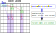
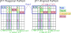
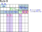
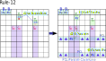

最新の情報は、GNPX ソースコードです。
自明なことを確認します。
正しい論理に基ずくアルゴリズムは、正しい結果を導きます。
誤った論理のアルゴリズムは、正誤いずれの結果も導きます。
結果だけからはアルゴリズムが正しいことを 結論できません。
おそらく、GNPXにはバグがあります。このためGNPXでは多数の Puzzle を解いています。
(GNPXは、自動でPuzzleを解き、評価する機能を持っています。）
多数の試行によって安心したく思います。
本ページの内容は発展途上であり、批判的に見てください。
Exocet
Exocetは、他のアルゴリズムとは"異なるタイプのLocked"です。Exocetのみで解ける局面もあり、魅力的なアルゴリズムです。
Exocetには、素朴なタイプから拡張タイプまで 様々な種類があり、Exocetはそれらの総称です。
ver.6.0では Target 型の Exocet を対象とします。 Object 型は将来のバージョンの課題です。
Junior Exocet (JE2)
JExocetは、Base、S領域、Target の関係 による Locked です。
Baseの2セルには、3以上の候補数字があります。2つならLockedSetなので、3つ以上とします。
JExocet Lockedは、つぎのような制約です。
Exocet Locked : Baseの候補数字からどの2つの数字組を選んだとしても、それらは Target1 と Target2 で肯定となる。
実際には Baseには候補数字が2つ超あるので、"どの2つの数字組を選んでも矛盾しない。" という状態です。
JExocet Lockedからは、次の論理が展開できます。これらは、以下の 除外 の項で詳述します。
- Targetには、候補数字以外は入らない。
- Base数字が 一方のTargetで 肯定 なら、他方のTargetでは 否定 である。
- Cross-Cover-Line をもつベース数字は、対応する Target で 否定 である。

以下に示す "形の定義"と"候補数字の条件" を満たすとき、JExocet Locked は成立します。
(1) JE2 形の定義
Junior Exocet(JE2) には、複数の役割のセルがあり、次の図のように配置されます。
- Baseセルは1ブロック内のminiラインに配置する。
- Escapeセルは、Baseセルと相補的な位置にある。
- Targetセルの配置には、対角形（Diagonal）と整列形（Aligned）の2タイプがある。
- Companionセルは、Targetセルの位置に連動して配置される。
(注)Base と Escape の相補的な性質は、以下で述べる "2つのCoverLineで被覆される" 条件のもとでの関係です。

* [Exocetの最初の理解のための補足]
Exocet の仕組みの理解には、"方向" を区別するのが役立ちます。
"Baseの並び"を基準として、これと並行の方向は "Parallel"です。交差する方向は "Cross" です。
文脈から明らかなときは、これらはしばしば省略されます。
JExocetの形は、次の手順で導きます。これらは、JExocetの解法コードを作成する上でも参考になります。
- ステップ 1 : 盤面上の一つのセル(Stemセル)と、方向(行、列)を選ぶ。これによって、mini-lineが決まる。
mini-lineの2つのBaseセル(B1,B2)と、Band、2つのブロック(Block1,Block2)が決まる。 また、Stemセルと方向から、Cross-Line-bが決まる。*mini-line は、ブロック内の行または列の3セル。
*Stemセルは形を導くためのもので、Exocetのロジックには関わりません。 また、Stemセルは、確定/未確定のいずれでも選べます。
- ステップ 2 : ブロック1,2にあり Baseに連結しないセルは、それぞれ6セルある。各ブロックから、数字未確定の Target セルを選ぶ(T1,T2)。
方向と Targetセル(T1,T2)から、Companionセル(C1,C2)、Cross-Line(CL1,CL2)、SLine(S1, S2) が定まります。 これらのセルは、確定/未確定のいずれの状態もあります。
Companion には、Exocet 成立のうえで重要な役割があります。このことについては 後に 説明します。
SLine(S0,S1,S2)は、Cross-LineのBand外の領域です。
Mirrorは、Exocet Locked の成立には関係しません。
Mirrorは、Exocet Lockedが成立したもとで、TargetとMirrorの関係を用いると、除外できるセル・数字が導ける、という関係です。
Mirror は別の項で述べます。
(2) JE2 候補数字の条件
JExocet の形の定義のもとで、次の条件(R1～R4) をテストします。
全てのBase数字が条件 R1～R4 を満たすとき、Exocet Locked になります。
JE2 候補数字の条件
| R1 | Baseセル(B1,B2)は、いずれも未確定セルであり、合わせて 3～4 個の Base 数字をもつ。 |
| R2 | Targetセル（T1,T2）は、いずれも未確定セルであり、合わせてBase数字を3つ以上もつ。 |
| R3 | Companionセルは、Base 数字を含まない。 |
| R4 | Base数字の全てについて、S領域{S0,S1,S2}にある Base数字は、2つの Line(House) でカバーされる。 |

これらの条件について、若干、補足して解説します。
補足:
| R1’ | Baseセルの Base候補数字 が 2つの場合は LockedSet です。5以上のケースは、"制約が多くなり、おそらくないであろう"という予測によります。
これより、R1は"3～4の Base数字"となっています。おそらく、拡張します(GNPX ver.6 では 3～6)。 2つのベースセルに共通の数字がないこともあります。 |
| R2’ | TargetはBase数字以外の候補数字を含むことも可能です。 |
| R3’ | Companionセルは、確定セルと未確定セルの場合があります。 |
| R4’ | S領域{S0,S1,S2}にある Base数字は、候補数字、確定数字のいずれもあります。 |
(3) JExocet の論理 ... Lockedの証明
R1～R4を満たすBase数字は、Locked です。
Base数字から 任意の2数字を選択 したとき、この2数字組について次の命題が成り立ちます。
命題 : Baseで positive なら、Target1 と Target2 でも positive である。
- JE2 Lockedの証明 (CL:Cross-Line)
- L1. Baseセルで、ベース数字#ab は positive とする。Escapeでは #ab は negative となる。
- L2. CL-b,CL-1,CL-2には、#abのインスタンスがそれぞれ 3つあり(数独のルール)、合わせて6個のインスタンスがある。
- L3. R4より、Sセル(S0,S1,S2) には 2つの #a CoverLine、2つの#b CoverLine がある。
- L4. "6-4=2"より、CL-1,CL-2の Band領域には #aと#b のインスタンスがある。
- L5. #aと#b インスタンスは、Escape、Companionにはないので、それぞれ Target1 と Targe2にある。(どちらにどれかは確定しない)

(4) Exocet Locked の理解
ここで、改めて Exocet Locked の状態を考えます。
Exocet Locked は、Baseの候補数字から どの2つの候補数字を選んだ としても、それらは Target で肯定となります。
対象とするPuzzleには解があり、かつ唯一解のPuzzleです。その解から翻れば いずれかの2つのBase候補数字(#a,#b)は確定数字(#A,#B)です。
Base候補数字は3つ以上あるので、残り"#x"に着目すると、候補数字#Xは Target で否定であり、Escapeで肯定です。
ただし、Puzzleを解く途中段階では、Base候補数字のどれが解であるかは分かっていません。
Exocet Lockedは、確定していない が それでも導けることがある 推論です。
同様のこと(推論)は、例えば LockedSet を思い浮かべると良いでしょう。
(5) Mirror Logic
Mirror は、Exocet Logic が成立したときに生じる論理です。
1) JE2で Exocet Lockedが成立している、とする。
2) Targetが #a なら、Mirrorの一方のセルには 同じ#a がある。
対偶 : MIrrorに#aがないなら、#a は Targetにない。
3) MIrrorにないBase候補数字は、対応するTargetにない。
Base・Target・Mirrorは同じBand内にあり、スコープが重ならない位置にあります。
このことから、Mirrorを用いる除外 が成立します。
一方、JE2 以外で Band制約とスコープの重なり条件が成立しないケースでは、Mirrorの論理は成り立ちません。

除外
Exocet Locked が成立すると、候補数字が 否定/肯定 に確定することがあります。
本HP および GNPX では、除外ルールは次のように用います。
- 除外ルール は、Bird 文書 の JE2のルールを基本としています。また、同文書の番号を流用します。
JExocet Compendium by:David P Bird
http://forum.enjoysudoku.com/jexocet-compendium-t32370.html
- 波及的(二次的)に、否定/肯定 が導かれる論理は対象としません。これは他の解析アルゴリズムと同じです。 二次的な効果は、次のステップで解析されます。
- 除外ルールには、拡張 Exocet には適用できないルール があります。
- Mirrorを用いる除外ルールは、適用に条件があります。
- 除外ルールは、先行するルールの結果を利用できる場合があります。GNPXでは、繰り返し適用する方法を採用しています。
除外ルール
-
E3. Target内の 非ベース数字は 否定である。
Exocet Locked なら、Targetには いづれかの ベース候補数字が入ります。したがって、非ベース数字が Target に入る余地はない。

-
E4. ベース数字が Target で 肯定 となることが確定なら、他方の Target では 否定 である。
それぞれの Target には異なるベース数字が入る。 一方の Target で positive になることが確定なら、他方の Target では negative になる。
Object の 2セルに確定した数字があるなら、スコープにある数字は除外される。

-
E5. Cross Cover-Lineをもつベース数字は、対応する Target で 否定 である。
これは、次のように導けます。- (1) S1に #a の Cross-Cover-Line があるとします。
- (2) 命題:T1で Base候補数字#a は positive とする。
- (3) Baseの#aは positive。
- (4) S0には #a インスタンスがある。
- (5) S2には #a インスタンスはない。
- (6) T2には +#a がある。
- (7) T1#a と T2#a は矛盾する(他のBase数字がTargetに配置できない)。
従って、(2)命題は偽であり、T1の #a は negativeである。
E6. Targetに対応する Mirror で肯定にできない ベース数字は、Targetでは 否定 である。
JExocet の定義により、命題：Target で肯定のベース数字は Mirror でも肯定 が成り立つ。Rule-6は、この命題の対偶です。
Mirrorセルは、確定値のこともあります。ベース数字と異なる確定値の場合に、この条件に合致します。

E7. Mirror Cellの1つに、対応するTargetにあるベース数字が含まれないなら、 同じ Mirror の他方の Cell に、対応するTargetにあるベース数字が含まれる。
Mirrorの位置と、Base、Targetの影響圏から、Mirrorには Targetにあるベース数字がある。ベース数字が M1A にないなら、M1B にある。 したがって、M1B から 非ベース数字は除外できる。

-
E8. "ベース数字 が確定しているとする。" Mirror Cell に 非ベース数字 が1つ含まれるなら、 それは 肯定 である。
Mirror セルには、ベース数字と、非ベース数字が含まれます。
ベース数字 が確定したとする。- Mirror に含まれる非ベース数字について、
- 1セルなら : 非ベース数字は確定し、これを参照するセルから非ベース数字 から除外できます。
- 2セルなら : 2つの Mirror を共通して参照するセルから非ベース数字 から除外できます。
-
E9. Base候補数字が、2セル2数字のLockedSet とします。 Mirror に Locked された数字があるとき、その数字がベース数字なら他のベース数字は Mirror では 除外できる。 あるいは、その数字が非ベース数字なら他の非ベース数字は Mirror から 除外できる。
Base候補数字が、2セル2数字のLockedSet の場合のみ成立します。
Mirror には ベース数字と非ベース数字が入ります。
Mirror に ロックされた数字があるとき[Mirror_Locked]、ベース数字と非ベース数字の両方を入れるためには、ロックされた数字の制約が生じます。
2つの Mirror セルに ベース数字を2つ配置することはできません。 同じように、非ベース数字 を2つ配置することはできません。- Mirror_Locked された数字が ベース数字であり、かつ、
Base_Locked のとき、
Mirror内の 他方の ベース数字 は 否定 である。 - Locked された数字が 非ベース数字 のとき、 Mirror内の 他方の 非ベース数字 は 否定 である。
 - Mirror_Locked された数字が ベース数字であり、かつ、
Base_Locked のとき、
-
E10.ベースの2数字が確定のとき、BaseとTarget の影響圏では Base 候補数字は除外できる。
2つの Base は 肯定 に確定しているので、その影響圏では 否定 になります。 また、Target は 肯定 となり 共通の影響圏では 否定 になります。

-
E11. Cross-Line の Escape Cell に 1回しか現れない数字は、その Cover houseの ”S” 以外のセルでは 否定 である。
Bird 文書の11項 を修正している。確定したベース数字についての除外は 12項 とした。
本項の対象とする数字は、"JExocetの解候補の1つである" ことが条件である。無制限にこのルールは適用できない。
- (1) #abx JExocetの解候補とする。
- (2) #abが解と確定したなら、#x は解でない 。このとき、#x は Escape にある。
- (3) #xは JExocetの解候補なので、jExocet の条件(Base,Target,Sの関係）は有効である。
- (3) Base ブロックの Escape にある#xが一つなら、それは Positive である。
- (4) CrossLine-1,-2の Escape にある#xが一つなら、それは Positive である。

-
E12. 2つのベース候補数字が肯定に確定したなら、S領域で2つのインスタンスが 肯定 となるのを妨げる数字インスタンスは、否定 である。
2つのベース候補数字(#ab)が肯定に確定したとする。- (1) T1=#a とする。S1に#aはない。
- (2) 基本ルールにより、S0には#aは1つある。
- (3) 候補数字の条件:R4 により、S領域の候補数字は 2つの Cover-Line で覆われている。S2には#aがある。
- (4) Cover-Line の S領域外にある要素(▲)は、Cover-Line条件(R4)の成立を妨げる。
(PCL-{S})#a is negative (PCL:Paralell-Cover-Line, -:差集合)

- テスト対象の Base数字 は、それぞれTarget にある。
- 2つのBase数字のインスタンスは、S0にある。インスタンスは確定済みのこともある。
- 2つのBase Cellの 2つのCross-Blockには、候補状態の Base数字がある。
- Case-1:2つのBase数字のS0におけるインスタンスが、同じセルになる。
このパターンは数独解としてあり得ないので、この組み合わせパターンは除外できる。 - Case-2:2つのBase数字のS0におけるインスタンスが、同じ Cross-Block にある。
このパターンは、Cross-Block のBase数字を全て排除する。
もう一つの Cross-Block には何も影響しません。
したがって、この組み合わせは Baseと UR の関係になり、
数独解の唯一性から、この組み合わせパターンは除外できる。 - Case-3:2つのBase数字のS0におけるインスタンスが、異なる Cross-Block にある。
このパターンは、それぞれの Cross-Block で それぞれの Base数字 を排除する。
この場合は、Baseと UR にはなりません。
したがって、この組み合わせパターンは解の可能性が残る。
除外-2
除外-2 は、2つのベース数字 による 除外 です。Bird の文書では, "Incomtible Base Pairs" の項です。
2つの Base にある 候補数字 は、自由な組み合わせで ベース数字の候補にはなりません。
例えば、Baseの 候補数字が(1,2,3)であれば、{(1,2),(1,3),(2,3),(2,1),(3,1)(3,2)}の組み合わせがあります。
また、2つのBaseの候補が異なる場合には、可能な組み合わせのパターンになります。
これらの組み合わせに対して、それぞれをテストします。Exocetの性質から、次のことを用います。
S0にあるインスタンスは、次の3通りがあります。
"除外-2" はベース数字組み合わせの不適格なものを検出します。GNPX では "除外-1"よりも先に、"除外-2"をテストします。
Junior Exocet_1 (JE1)
JE1は Targetが1つのタイプです。JE2での 一つのTarget(Object)がある位置に、確定数字（問題数字、または解析により確定した数字）があります。
JE1の要素は、Base、Base数字、1つのTarget(Object)、確定数字Object(Base数字以外の確定数字があるObject)です。
BaseのCrossLine、Targetと空白ObjectのSLineは、Junior Exocetの自然な形で定義します。
Sセル{S0,S1,S2}のカバーの仕方には、2つのタイプがあります。これは、JE1特有の条件です。
- S 基準 : 2つの CoverLine でカバーされる。
- Wildcard 基準 : 3つの CoverLine でカバーされる。

JE1 の論理
JE1の Base数字 のカバーの仕方別に次の論理が成り立ちます。
-
(1) S基準を満たす Base数字
- S基準 Lockedの証明 (CL:Cross-Line)
- 1)Base数字 #aは、S領域に2つのCoverLineがある とします。
- 2)S領域を含むCrossLineには、合わせて3つの#aインスタンスが必要である。
- 3)従って、Targetに #a がある。(3-2=1)

-
(2) Wildcard基準を満たす Base数字
- JWildcard基準の証明 (CL:Cross-Line)
- 1)Base数字 #zは、S領域に2超のCoverLineがある とします。
- 2)S領域を含むCrossLineには、合わせて3つの#zインスタンス必要である。
- 3)従って、Targetに #z はない。(3-3=0)

JE1 の除外
JE1 が成立すると、次の除外ができます。
- Target の Wildcard(#z)は、negative に確定
- Baseの Wildcard は positive に確定、Base のもう一つの数字は未定。
- Escape にある Wildcard は negative に確定。
- Sline-1にある Wildcard は positive に確定。これが１つなら、対応セルの Wildcard 以外の候補は除外できる。
- BaseとTargetのWildcardが確定することで、これの影響圏の Wildcard 数字は negative になる。
除外-4,5は波及的な除外なので、GNPXでは対応していません。